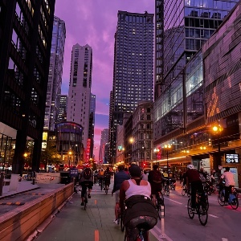
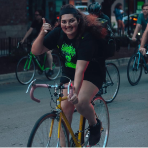
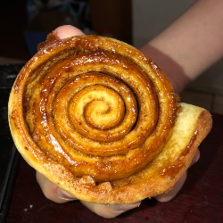
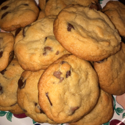

Hi! My name is Sasha Rodriguez and I am a third-year Communications Major and my specialization is in Technology and Business. I grew up in Chicago for most of my life, moving into the city when I was about 12 and prior to that I lived in a small town just outside of the city off of the Pink Line.
I enjoy many things outside of school and could talk hours about my many passions.
Recently, I developed a cycling hobby and I enjoy riding around the city of Chicago with friends and participating in many group rides. I also love baking, music, and a sense of community.
I am apart of the radio station here at IIT as a Music Director. I recently purchased a Cinelli fixed gear bike with a flip-flop hub for this season. I have baked many things and even started a mini recipe book of things that I have baked in the past. Sometimes I bake for group rides. This past summer I baked brookies, pumpkin cookies, chocolate chip cookies, peanut butter blossoms, and many other things. I pack them in my bookbag and lift off on my bike to go see other people on bikes. It's a really fun way to build community and meet new people all across Chicago.
I started riding bikes around Chicago around March of last year. I found that it's a form of exercise that I feel like I could do forever. I used to hate pushing myself when it came to anything remotely physically active. Cycling has actively made me appreciate the way I am able to move from point A to point B efficiently while also getting to use my voice and yell commands like when I'm turning left, right, using the bike lane, or just scolding people in cars. In total I have three bikes and my most recent bike is my Cinelli Gazetta that I still have yet to ride. The thing that makes it so intimidating is the fact that it is in fixed gear.
Fixed gear bikes are different from your standard bike. If the wheel is in motion the pedals are in motion, it makes it a little harder to control your ability to stop because you have to push back on the pedal in order to stop. Imagine you are going about 16-17MPH and you come to an immediate stop, you risk getting bucked off if you don't know how to brake correctly!
 
I am so excited to throw myself into it as I have rode fixed gear in the past but not as consistently as my new fixie will allow me to. My sister actually introduced me into cycling when I visted her in Denver last year. She showed me the ropes and I've turned it into my own thing over here in Chicago. I've been building my skillset slowly as I learn and understand how to repair my own bikes. I can also ride my bike without gripping the handlebars.
Critical Mass is the largest organized bike ride here in Chicago that has chapters all across the globe! Here in Chicago they meet at Daley Plaza every last friday of the month. I've particiapted in it quite often and you can see me there on my bike in some funky outfit and a big goofy grin alongside all the other bike peeps here in Chicago.
Baking is another one of my passions and I even have three baking books! I make a variety of different treats that I like to throw my own spin on. I also worked in the bakery department of a large grocery store chain that allowed me to express my creativity a bit more and experiment with actual client interactions and feedback.
My favorite thing to bake are my chocolate chip cookies. Simple yet complex. The trick is to clarify the butter and then brown it. Brown butter emphasizes the chocolate by bringing a nuttier and slightly toasted taste to the batter. I use a mix of 70% cocoa dark chocolate and semi-sweet chocolate chuncks. All topped with cracked sea salt and thrown into the oven only after the batter has chilled for 30 minutes.
I really enjoy baking things for other people because I appreciate feedback and compliments. I love being able to 'WOW' people with what I bake. It makes me happier than eating the treats myself!
 
I listen to a variety of different genres on a daily basis, as a Music Director my role is to introduce new music to IIT students through our automation system and I recevie countless emails regarding new singles, album releases, and upcoming concerts. You can find out more about WIIT 88.9FM here.
Lately, I have been back into a lot of 80s industrial music with my favorite artists being Ministry and My Life With the Thrill Kill Kult(TKK). Both of which are originally from Chicago, and while everyone knows about The Smashing Pumpkins, but not much is said about TKK being the real Chicagoans.
I also really enjoy attending shows and concerts. Live music is truly a different form of music because you get to see and hear and feel your favorite songs be played for you all the while you dance and sing and feel free to express the way that the music makes you feel. It comes alive in a completely different form that you never knew existed, even if you've heard the song a million times it shocks you in a way you will never feel through your headphones. It makes me happy to be able to show someone an artist they normally wouldn't listen to and show them why exactly they get so much praise.
For a while, I was documenting and interviewing local musicians for a school newspaper. Connecting with artists on a personal level brings me closer to music as well. I also gain that sense of community within the music scene because I get to bring new eyes to their music and projects.
I also really enjoy music from Theives Like Us, Pere Ubu, GroupLove, System of a Down, and The Postal Service just to name a few.
Here is my recommened playlist if you are interested in hearing some new music from the 80s industrial era.